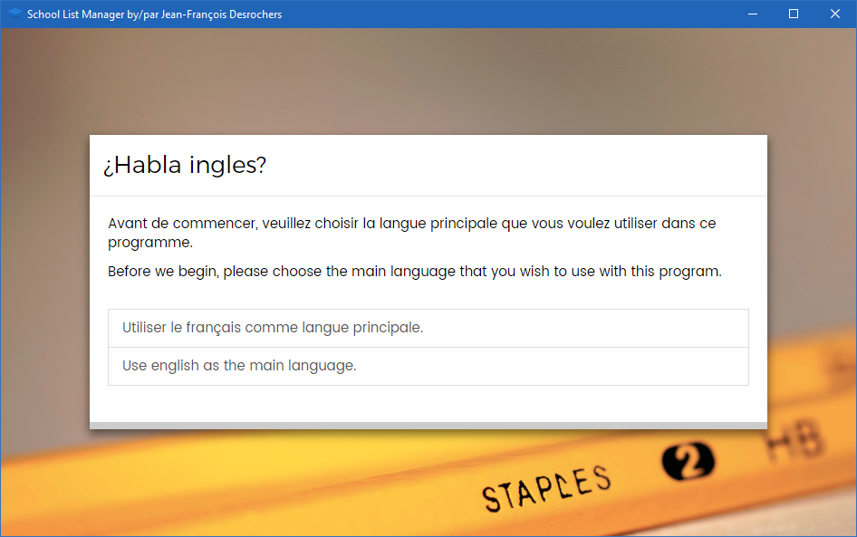
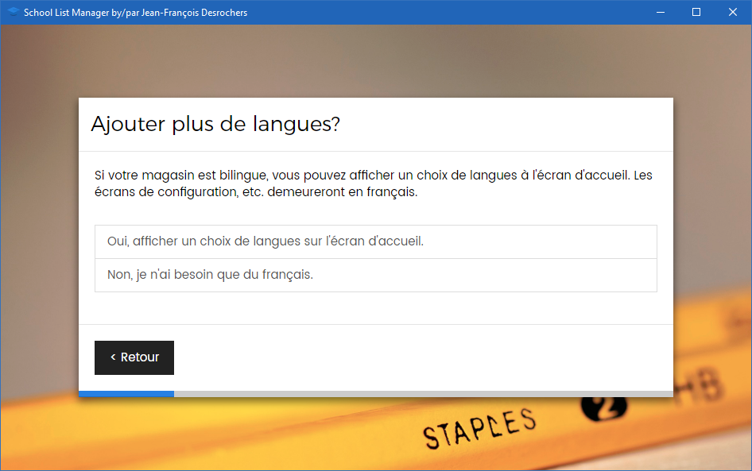
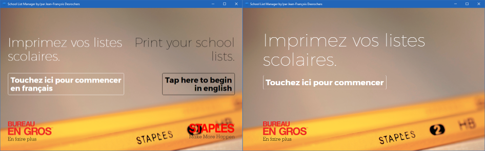
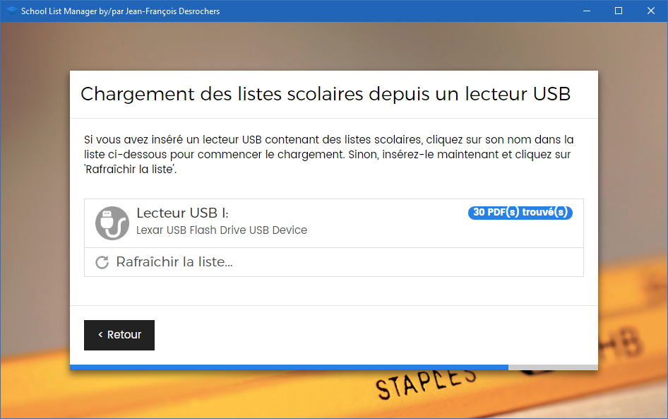

Configuration¶
Vous trouverez devant vous un assistant de configuration. Cet assistant a été conçu pour la simplicité d'utilisation, mais nous allons en voir les différentes étapes tout de même.
Choix de la langue¶
Le première question est facile: choisissez la langue qui correspond à la langue principale utilisée par vous et vos clients (ce qui, par la lecture de ce guide, j'assume est le français).

Certains d'entre-vous ont également un bon nombre de clients anglophones. Cela a été prévu dans le programme et il peut donc offrir un choix de langues sur l'écran d'accueil.

Voici les différentes apparences de l'écran d'accueil avec l'option bilingue ou non activée :

Informations sur votre succursale¶
La prochaine étape est d'entre votre numéro de succursale ainsi que votre district. Cela permettra d'identifier votre succursale dans les statistiques et servira de code d'accès pour certaines fonctions du programme (plus sur ce sujet dans la prochaine section).

Connectivité Internet¶
La prochaine étape vérifiera simplement la connectivité internet et vous donnera des options pour vous brancher si vous ne l'êtes pas déjà.

Pourquoi la connectivité internet est-elle si importante?
Le programme transmet automatiquement des statistiques sur les listes chargées dans votre programme ainsi que le nombre d'impressions. Cela nous permettra d'établir une mesure de la popularité du projet et d'identifier de potentiels problèmes avec la configuration ou l'utilisation du programme. Être connecté à Internet vous permettra également d'utiliser l'outil de contact si vous avez des questions ou des problèmes (plus sur ce sujet dans la prochaine section). Voici un exemple des données que nous recueillons :

Chargement des listes depuis le lecteur USB¶
Cette étape chargera les listes à partir du lecteur USB préparé précédemment. Vous aurez d'abord un rappel de la méthode à suivre, à laquelle vous pouvez Continuer. Ensuite, vous aurez l'écran ci-dessous. Cliquez simplement sur votre clé USB dans la liste pour démarrer le chargement.

Une fois le chargement terminé, vous aurez l'écran suivant qui indique toutes les listes qui ont été correctement chargées :

Erreurs potentielles
Si le programme ne trouve pas les fichiers PDF sur la clé, s'il ne charge pas les bons fichiers ou s'il y a une erreur, assurez-vous qu'il n'y a que les fichiers que nous avons préparés sur la clé (Listes Scolaires et SLMSetup.exe). Parfois d'autres fichiers peuvent interférer avec l'opération.
Installation terminée!¶
Le dernier écran vous souhaite basiquement la bienvenue dans le programme et vous indique comment accéder à la section des réglages, ce que nous verrons ensuite. Vous vous trouverez ensuite à l'écran d'accueil! Le programme est maintenant prêt à utiliser.
Recommandations
Nous vous recommandons d'éteindre l'ordinateur à chaque soir et de le redémarrer à chaque matin. Vous pouvez quitter le programme depuis l'écran tactile par le menu des réglages (que nous verrons dans la prochaine section). Comme le programme désactive la mise en veille, cela prolongera la vie de l'ordinateur et un redémarrage quotidien évitera des bugs ou des problèmes qui surviennent parfois dans un système trop longtemps ouvert.
Nous vous conseillons également de garder un clavier et un souris à proximité, car certains réglages peuvent demander d'écrire au clavier.
Voyons maintenant comment changer les réglages dans la section suivante.